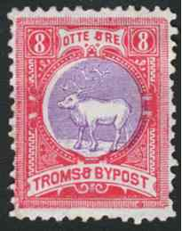
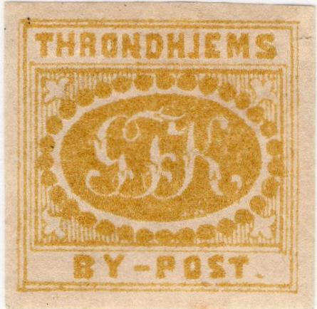
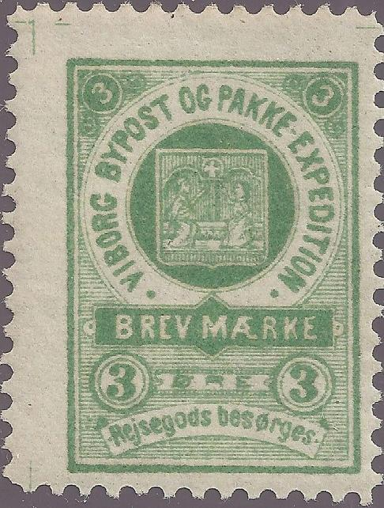

Return To Catalogue - Bypost overview
Note: on my website many of the
pictures can not be seen! They are of course present in the
catalogue;
contact me if you want to purchase the catalogue.
NOTE: not all the bypost stamps are yet catalogued by me. If anybody posesses pictures of bypost stamps that are not yet in my catalogue; please contact me!
3 o brown 5 o blue 8 o green
2 o brown 5 o red 8 o grey
Surcharged 5 on 2 Ore brown (4 types, forged overprints exist)

(Forged overprint, image obtained from Dr. Reinhard Meyer's
website with permission)

2 o blue and red 2 o green and red 5 o brown and blue 5 o green and brown (1895) 8 o green and red 8 o red and violet (1895) 25 o violet and olive (1895)
More information on types, cancels etc. can be found on: http://www.nordische-staaten.de/laender/Norwegen/Bypost/bypost.html (in German).
The Bypost in Trondhjem (Throndhjem) lasted from 1865 to 1913. The income did not only come from the postal service, but also from selling stamps to philatelists.

I'm not sure if this is a genuine stamp.
The above stamp is the first bypost stamp issued in Norway. This Throndhjem bypost was opened on Nov, 1865. It served Trondhjem and suburbs for both letters and parcels. It was operated by Georg F. Krogh up to 1870 when he sold the business to Braekstad&Co. At least 4 types exist; one with 30 pearls, one with 31 pearls. There also seem to exist stamps with overprint 'B&Co' (I have never seen this genuine overprint personally). Krogh only used pen cancellations.
Reprints exist with smaller inscription 'BY-POST' and with no dot behind this word, example:

(Reprint)
These reprints also exist with the overprint 'B&Co':

(Reprint with 'B&Co' overprint, image obtained with
permission from Dr. Reinhard Meyer's website)
A badly executed forgery exists with a large open "O" of "BY-POST." (this word has a dot in this forgery).

1/2 s blue 1 s red 2 s green

'1/2' on 1 s red '1' on 1/2 s blue '1' on 2 s green (2 types) '2' on 1/2 s blue (2 types) '2' on 1 s green '4' on 2 s green (2 types) '8' on 2 s green
A large number of reprints were made (also surcharged stamps) from new plates. These reprints were also valid for postal use (authorised by the owner Braekstad). A forgery of the 1 sk red stamp exists. Furthermore a forgery of the 1/2 sk on 1 sk red stamp exists (the overprint is different from a genuine stamp).


2 o blue and green 4 o red and yellow 8 o green and yellow
These stamps exist in two sizes.

(Image obtained with permission from Dr. Reinhard Meyer's
website)
4 o brown
Imperforate stamps exist (non-issued stamps).
2 o yellow 4 o red (orange) 4 o blue 8 o violet 16 o brown Surcharged (1902) '2' on 4 o red


(Images obtained with permission from Dr. Reinhard Meyer's
website)
2 o blue (arms) 4 o red (cathedral) 10 o green (St.Olaf) 20 o brown (fort?)
Postal stationery:
Besides the above postcard, another postcard seems to have been issued with inscription 'BREV KORT' with no value indication.
For more information on the bypost issues of Throndjem, see: http://www.nordische-staaten.de/laender/Norwegen/Bypost/bypost.html (in German).
(Images obtained thanks to Lasse Hult)
(Reduced sizes)
2 o blue 4 o red 8 o green 10 o violet
(Images obtained thanks to Lasse Hult)
2 o brown 4 o red 8 o grey 10 o orange
For more information see: http://www.nordische-staaten.de/laender/Norwegen/Bypost/bypost.html (in German).
Veile Bypost issued stamps from 1887 to 1906.
1 o brown 2 o orange 3 o green 5 o red 10 o blue Other values might exist.
Used stamps from 1886 to 1890.
3 o blue 5 o red


(Reduced size)

5 o blue and red 10 o green and red (Pakkemarke)


Note the different inscription at the bottom in the last stamp.
{kind=link}
{kind=link}
{kind=link}
{kind=link}